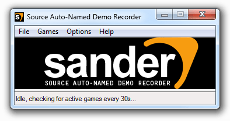

Source Auto-Named Demo Recorder (SANDER)
Helping you record Source engine demos with a unique, timestamped name until Valve adds similar functionality.
Written by Sander Dijkstra, april 2009

Download latest version 0.1
README.TXT:
Source Auto-Named Demo Recorder
===============================================
Helping you record Source engine* demos with a unique, timestamped name
until Valve adds similar functionality.
Written by Sander Dijkstra, april 2009
http://www.dyxtra.com
This little application is based on the concept by Paegus and his
'Auto-record unique demoname thingy' from 2006. I decided to take
the concept and streamline it for my own personal use.
* Will most likely also function with engines that use the same
config file setup and record commands, like the Quake 1/2/3 engines.
INSTALLATION
===============================================
1) Unzip the SANDER archive to anywhere you like.
2) Bind "exec sander.cfg" to a key of your choice in the game you
want to record demos of.
example: bind F9 "exec sander.cfg"
USAGE
===============================================
1) Start SANDER (doesn't matter if the game is already running or not)
2) To start recording a demo with a unique timestamped name during the
game, press the key you bound in step 2 of the installation
HOW IT WORKS
===============================================
As soon as SANDER detects that a game is running, it starts updating the
'sander.cfg' file in that game's CFG folder every X seconds. This file
contains a simple 'record [demoname]' command, where [demoname] is an
autogenerated timestamp. So, whenever you press your record button,
'sander.cfg' and the command inside are executed.
This way you can always use the same button to start recording a demo but
never have to worry about overwriting previous ones.
HOW I USE IT
===============================================
In game, my record button is TAB, the same button I use to show the
scoreboard, with the following code:
alias +showexec "+showscores; exec sander.cfg"
alias -showexec "-showscores"
bind TAB +showexec
I check the scores regularly at dead game moments and at the start of a
game, so this ensures I am always recording a demo even without thinking
about it. It works because the Source engine ignores any record commands
if a demo is already being recorded, so me repeatedly pressing TAB does
not interfere with the recording.
<< Back to dyxtra.com